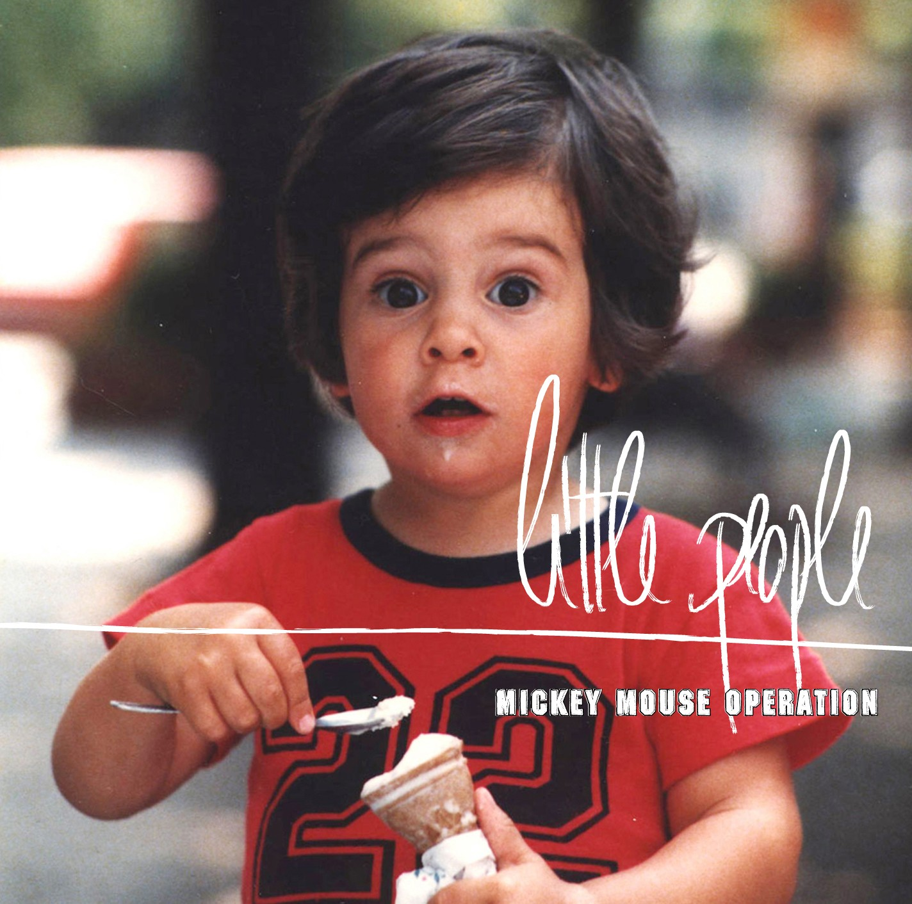

Debut album as Little People (2006). A re-release and 20th-anniversary edition is in progress — limited-edition figure, coloured vinyl, and a fold-out insert.

Overview
The record that started Little People — a debut album of sample-led, cinematic electronic music released in 2006. Twenty years on, it's being revisited as a collector's edition.
Anniversary edition
The 20th-anniversary release is in the works: a limited-edition figure, coloured vinyl pressing, and a fold-out insert — a physical object to match the music.